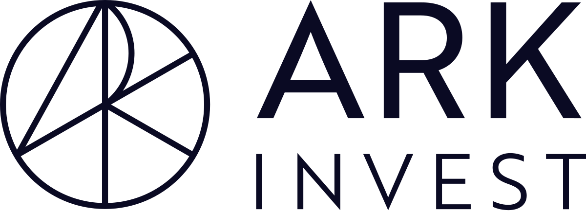

ARKK is an actively managed fund that seeks long-term capital growth from companies globally involved with, or that benefit from, disruptive innovation.
ARKK is full of cutting-edge firms, selected to represent the adviser’s highest-conviction investment ideas in this space. The adviser defines “disruptive innovation” as a technologically enabled new product or service that has the potential to change the way the world works.
ARKK's portfolio focuses on companies involved in genomics, automation, transportation, energy, artificial intelligence and materials, shared technology, infrastructure and services , and technologies that make financial services more efficient . ARKK's proprietary macroeconomic and fundamental research, aimed at assessing company potential, drives security selection and weighting. ARKK's research integrates ESG considerations as a secondary assessment.